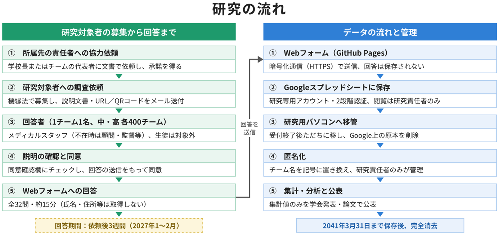

はじめに
この文書は、研究課題名「育成年代のスポーツ現場における傷害データの収集および活用に関する実態」への研究の参加をお願いするための説明文書です。この説明文書をよくお読みになって、この研究にご参加いただけるかどうかをご検討ください。
研究に参加されるかどうかはあなたの自由意思で決めてください。研究に参加されなくてもあなたが不利益を被ることはありません。説明を受けたその場で決める必要はありません。この説明文書をお手元に保存していただき、検討してから決めていただくこともできます。また、研究への参加に同意した後であっても、研究発表までの間、同意を撤回できます。撤回したことによってあなたが不利益な取扱いを受けることはありません。
研究の内容や言葉について、わからないことや、心配なこと、疑問に思ったことなどがありましたら、どんなことでも遠慮なく説明者である研究責任者にお尋ねください。
研究責任者・説明者
所属 筑波大学 体育系 准教授
氏名 眞下苑子
連絡先 電話：029-853-2667
E-mail：mashimo.sonoko.gp@u.tsukuba.ac.jp
１ 研究課題名
この研究の研究課題名は、「育成年代のスポーツ現場における傷害データの収集および活用に関する実態」です。
この研究は、筑波大学体育系研究倫理委員会の審査を経て、筑波大学体育系長の許可を受けて実施しています。
２ 研究の背景
スポーツによるけが（傷害）を予防するためには、統一された方法で、継続的に質の高い傷害データを集めることが大切です。けがの情報を集めて記録する取り組み（傷害調査）は、選手の健康を守るための基本的な取り組みであり、その結果は、傷害が起こる原因や仕組みを明らかにし、予防策をつくり、その効果を確かめることにつながります。国際オリンピック委員会は、傷害の記録・報告に関する国際的な基準を示しています。国内でも、2022年に日本アスレティックトレーニング学会と日本臨床スポーツ医学会が、これに沿って日本のスポーツ現場の実情に合わせた傷害調査の方法に関する提言書を発表しました。海外では、中学生・高校生などの育成年代からプロスポーツまで、さまざまなチームを対象に、傷害調査がどの程度行われているかが調べられています。例えば、アイルランドの中学校・高等学校のラグビーチームでは約8割のチームが傷害調査を行っており、主にコーチが記録していることが報告されています。一方、日本では、大学のスポーツチームを対象とした調査で、試合中の傷害を記録していたチームは48.3%、練習中の傷害を記録していたチームは42.7%にとどまり、医師やアスレティックトレーナーなどのメディカルスタッフがいるかどうかによってその割合が異なることがわかっています。しかし、中学校や高等学校のスポーツ現場で傷害調査がどのように行われているかは、まだ明らかになっていません。
３ 研究の目的及び意義
この研究は、中学校および高等学校のスポーツチームにおいて、傷害の情報がどのように集められ、活用されているかを明らかにするとともに、傷害の情報を集めたり活用したりするうえで妨げとなっていること（阻害要因）や、助けとなること（促進要因）を明らかにすることを目的としています。この研究で最も明らかにしたいことは、試合中および練習中に発生する傷害を記録しているチームの割合です。あわせて、誰が記録や集計をしているか、どのような記録用紙（調査フォーム）を使っているか、傷害をどのように定義しているか、傷害の情報をもとに練習内容などを変更したことがあるか、などについても調べます。中学生・高校生は、傷害を予防しながら、からだの成長に合わせてスポーツを行うことが求められる年代です。この研究の成果は、提言書に沿った傷害調査を広めることや、中学生・高校生の傷害を予防する方法を確立するための基礎的な資料になると考えています。
４ 予想される研究上の貢献・期待される利益
この研究により、中学校および高等学校のスポーツ現場において傷害調査がどの程度行われているか、また、傷害調査を行ううえで何が妨げとなり、何が助けとなるかが明らかになります。これは、提言書に沿った傷害調査を広めるための基礎的な資料となり、中学生・高校生の傷害の予防に役立つと考えています。研究の成果は、日本アスレティックトレーニング学会誌をはじめとする国内外の学術誌への論文投稿や学会発表により公表します。
５ 研究実施期間及び試料・情報等の保存期間
この研究は、2031年3月31日まで実施する予定です。
研究期間終了後、2041年3月31日まで、取得した情報を保存します。
６ 研究実施場所及び研究実施体制
（１）共同研究の有無
この研究は、筑波大学体育系を代表研究機関とし、流通経済大学、江戸川大学、帝京平成大学、信州大学および立教大学を共同研究参加研究機関として実施する共同研究です。筑波大学体育系は、研究全体の統括、質問紙およびWebフォームの作成、研究対象チームへの調査依頼およびデータ収集、データの解析・管理、論文執筆を担います。各共同研究参加研究機関は、質問紙の作成への助言、データ収集、論文執筆を担います。
（２）研究実施場所
調査は、研究対象者の皆様に、ご自身のスマートフォンまたはパソコンからWebフォーム（インターネット上の回答画面）にご回答いただく方法で行います。収集したデータの分析は、筑波大学の総合研究棟D621（教員研究室）で行い、データは同室内の鍵をかけたロッカーに保管します。
（３）組織
研究組織は、別紙の通りです。
７ 研究対象者
この研究では、全国の中学校および高等学校のスポーツチーム各400チーム、合計800チームに調査をお願いし、各チームで活動するスタッフ1名にご回答いただきます。ご回答いただくのは、チームで活動するメディカルスタッフ（医師、アスレティックトレーナーなど）の方です。メディカルスタッフがいない場合は、スタッフの中で、傷害の情報の記録や活用について最もよく把握している他のスタッフ（顧問、監督、コーチなど）の方にご回答をお願いしています。18歳未満の方はご回答いただけません。あなたには、中学校または高等学校のスポーツチームで活動されていることから、チームの責任者を通じて、この研究へのご参加をお願いしています。なお、募集にあたっては、事前にチームの責任者（学校長またはチームの代表者）に対し、文書により研究協力を依頼し、承諾を得ます。
ご参加にあたっては、調査のご依頼を受けてから3週間以内に、ウェブ上のアンケートに1回ご回答いただきます。所要時間は約15分で、参加期間はご回答いただく1日のみです。この研究にご参加いただくことに対する謝金・謝礼はありません。
８ 実施内容
（１）実施方法の説明
調査は、体育系研究倫理委員会の承認後、2027年1月から2月にかけて実施する予定です。回答期間は、調査のご依頼を受けてから3週間です。2027年3月以降に結果を解析する予定です。
この説明文書をお読みいただいたうえで、下記14（その他）に記載したURLまたはQRコードからWebフォームにアクセスしてください。Webフォームの冒頭にも、この説明文書の内容を掲載しています。冒頭の同意確認欄の「説明を読み、内容を理解したうえで、研究への参加に同意します」にチェックすると、回答画面に進むことができます。ご回答を送信していただいたことをもって、研究へのご参加に同意いただいたものとします。お名前、ご住所、電話番号、メールアドレスなどは伺いません。同じチームからの重複した回答の確認、チームごとの集計、および同意の撤回のお申出があった場合のご回答の特定のために、チーム名（学校名を含む）のみご記入をお願いします。
質問紙は、32問で構成され、伺う内容はあなたのチームでの役割とチームの情報（中学校・高等学校の別、チームの性別、選手数、過去3年間の競技レベル、練習時間・日数、スポーツ種目）、試合中・練習中のけがの記録の状況（記録の有無、記録している人、集計の頻度と担当者）、けがの調査フォームの有無と内容、けがや重症度の定め方、練習時間やプレー時間など、けがをするリスクにさらされている量（曝露）の記録の状況、けがの情報をもとにした変更の有無、記録や活用を妨げる要因（13項目）と可能にする要因（9項目）、けがの予防に関する優先順位です。あなたご自身のけがや病気の経験は伺いません。
Webフォームは、GitHub社のGitHub Pages（ウェブページを公開するサービス）上に設置します。通信はHTTPS（暗号化通信）により暗号化されます。GitHub Pagesは画面の表示のみを行い、ご回答の内容がGitHub社のサーバに保存されることはありません。なお、GitHub社はセキュリティのために閲覧者のIPアドレス（インターネット上の接続元を示す番号）を記録していますが、研究者がこれを取得することはありません。送信されたご回答は、Google社のGoogle Apps Script（Googleのサービス上で動作するプログラム）を通じて、この研究専用に作成したGoogleアカウントのGoogleスプレッドシート（表計算ファイル）に保存されます。このとき、あなたのIPアドレスやGoogleアカウントの情報は受け取らず、回答の際にログインしていただく必要もありません。保存されたデータは暗号化されます。研究専用アカウントには2段階認証を設定し、データを閲覧・編集できるのは研究責任者（眞下苑子）のみとし、外部に共有・公開することはありません。連携研究者が回答データにアクセスすることもありません。GitHub社およびGoogle社のサービスでは、データが日本国外のサーバで保存・処理される場合があります。回答の受付が終了したら、研究責任者がただちにデータを研究用のパソコンに移し、Google上のデータを削除します。削除後、Googleのシステムから完全に削除されるまでにおおむね2ヶ月、バックアップから削除されるまでに最長6ヶ月かかります。
WebフォームのURLは、研究責任者または連携研究者を通じて研究対象者の皆様にのみお知らせし、一般には公開しません。受付期間中は、受信した件数と内容を定期的に確認します。同じチームから複数のご回答があった場合は、最初に送信された1件を採用します。調査をご依頼したチームに該当しないチーム名のご回答は解析から除きます。
集めたデータは、中学校・高等学校の別に、設問ごとに回答の人数と割合を集計します。阻害要因・促進要因は、「ややあてはまる」「とてもあてはまる」（または「やや有益である」「とても有益である」）と答えた割合の高い順に整理します。また、回答者の役割、競技レベルごとに比較します。回答率は、ご依頼したチームの数をもとに、中学校・高等学校の別に算出します。
この研究はインターネット上の質問紙調査であり、身体への負担や危険性はありません。ただし、ご回答に約15分を要します。また、チームの傷害の記録の体制についてお答えいただくため、記録の体制が十分でない場合などに、心理的な負担を感じられる可能性があります。この調査は、チームや個人の記録の体制を評価したり順位をつけたりするものではなく、記録の実態と、記録を行うための条件を把握するためのものです。ご回答中に気分が悪くなったり負担を感じたりした場合には、いつでも中断・中止していただけます。送信前に中止されたご回答は保存されず、研究に使われることはありません。お答えになりたくない設問には回答しなくて構いません。中断や未回答によって不利益を被ることは一切ありません。また、Webフォームやデータの保存先で情報漏えいのおそれがわかった場合には、研究責任者が直ちに回答の受付を停止し、調査の再開または中止を判断します。
研究用パソコンに移したデータは、不正アクセス対策およびウイルス対策を施し、パスワードを設定したパソコンに保存し、研究責任者以外はアクセスできないようにします。パソコンは、総合研究棟D621（教員研究室）内の鍵をかけたロッカーに保管し、使用時以外は施錠します。ロッカーと研究室の鍵は研究責任者が管理します。解析は同室で当該パソコンを用いて行い、データを電子メールへの添付やUSBメモリなどで持ち出すことはありません。データを研究用パソコンに移した後、ただちにチーム名を記号に置き換え、解析にはこの記号のデータのみを用います。チーム名と記号の対応表、およびチーム名を含む元のデータは研究責任者のみが取り扱い、別のパスワード付きファイルとして保存します。結果は集計した値のみで公表し、該当する数が少なくチームや回答者が推測されるおそれのある区分はまとめて示します。
（２）説明図

９ 研究における倫理的配慮
（１）研究の対象となる個人の人権擁護
① 個人情報の管理
② 個人情報の保管
③ 個人情報の破棄
④ 個人情報の開示等
⑤ プライバシーの保護
（２）研究の対象となる個人に理解を求め同意を得る方法（インフォームド・コンセント等）
（３）研究によって生ずる個人への不利益及び危険性に対する配慮
Webフォームへの回答には約15分を要します。研究対象者には、回答に要する時間を調査依頼時に「研究についての説明」により文書で説明し、研究対象者の同意のもとで実施します。本調査で用いる質問紙は、チームにおける傷害の記録の体制や方法を尋ねるもので、回答者自身の病歴や傷害の経験は尋ねません。そのため危険性が高いとは考えにくいですが、自チームの記録体制について回答することで心理的な負担を感じる研究対象者がいる可能性があります。本調査はチームや個人の記録体制を評価・格付けするものではないことを文書で説明します。また、回答中に負担を感じた場合はいつでも中断できること、答えたくない設問には回答しなくてよいこと、中断や回答をしないことにより研究対象者が不利益を被ることはないことを文書にて説明します。さらに、同意確認欄にチェックしたうえでWebフォームの回答を送信したことをもって同意となることを文書で説明し、理解を得たうえで実施します。
10 緊急時対応、医療機関への搬送及び健康被害の補償
（１）緊急時対応と中止基準
この研究は身体に負担のかからないアンケート調査です。回答中に気分が悪くなったり、心理的な負担を感じたりした場合や、回答を続けることを希望されない場合には、いつでもご回答を中断・中止していただけます。送信前に中止されたご回答は保存されず、研究に使われることはありません。また、Webフォームやデータの保存先で情報漏えいのおそれがわかった場合には、研究責任者が直ちに回答の受付を停止し、調査の再開または中止を判断します。
（２）医療機関への搬送
この研究はウェブ上のアンケートのみで実施する、身体に負担のかからない研究であり、研究の実施によって医療機関への搬送が必要となる事態は想定されません。
（３）健康被害の補償
この研究は身体に負担のかからない研究であり、研究の実施による健康被害は想定されないため、補償措置は講じません。
11 研究資金
この研究は、公益財団法人日本スポーツ医学財団の2023年度研究助成によって実施しています。
12 利益相反（共同研究先の企業・団体等との関係を含む）
この研究組織には、利益相反事項に該当する者はおりません。
13 研究結果の公開
この研究の結果は、学術論文、学会発表およびインターネット掲載にて公開します。
研究結果を公開する際には、研究対象者を特定できる個人情報等は、開示しません。
14 その他
WebフォームのURLおよびQRコードは、次のとおりです。この説明文書をお読みいただき、研究へのご参加に同意いただける場合には、下記のURLまたはQRコードからWebフォームにアクセスし、冒頭の同意確認欄にチェックしたうえでご回答ください。
【Webフォーム】
15 問い合わせ先
この研究は筑波大学体育系研究倫理委員会の承認を得て、研究対象者の皆様に不利益がないよう万全の注意を払って行われています。研究への協力に際してご意見ご質問などございましたら、気軽に説明者または研究責任者にお尋ねください。あるいは、体育系研究倫理委員会までご相談ください。
【問い合わせ先】
所属：筑波大学 体育系 職名：准教授 氏名：眞下苑子
電話：029-853-2667 E-mail：mashimo.sonoko.gp@u.tsukuba.ac.jp
【筑波大学 体育芸術エリア支援室研究支援】
電話：029-853-2571 E-mail：tg-kenkyurinri@un.tsukuba.ac.jp
本研究への参加に同意しますか。